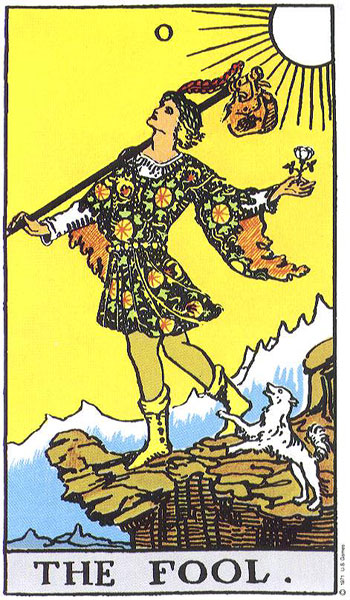
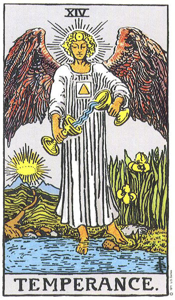

정방향과 역방향
정방향과 역방향 개요
타로 카드를 뽑아 펼치다 보면 그림이 똑바로 선 정방향(업라이트)과 위아래가 뒤집힌 역방향(리버스)으로 나뉜다. 정방향이 카드의 기본 의미를 그대로 전한다면, 역방향은 그 의미가 약해지거나 지연되고, 안으로 향하거나 지나치게 넘치는 모습으로 본다. 다만 역방향을 쓰지 않고 모든 카드를 정방향으로만 읽는 리더도 많아, 정·역의 사용 여부는 리더가 선택하는 방식의 문제다.
🃏 정방향 vs 역방향 시각적 비교 쇼케이스
동일한 카드가 180도 회전되었을 때 에너지가 어떻게 변형되는지 실제 카드 이미지로 비교해보세요.

0. 바보 (The Fool)
핵심: 순수 · 자유 · 새로운 출발
조건 없는 용기와 열린 마음으로 새 세상에 첫 발을 내딛는 순수한 에너지입니다.
0. 바보 (The Fool)
핵심: 무모함 · 경솔함 · 결단 지연
현실을 보지 않는 무모한 돌진이거나, 반대로 두려움 때문에 출발을 주저하는 상태입니다.

1. 마법사 (The Magician)
핵심: 창조 · 실행력 · 주도권
자신이 가진 기술과 자원을 100% 발휘하여 아이디어를 현실로 구현하는 힘입니다.
1. 마법사 (The Magician)
핵심: 속임수 · 능력 과신 · 실행 불발
말만 앞서고 실행이 따르지 않거나, 재능을 잘못된 방향(기만, 잔꾀)으로 쓰는 경향입니다.

14. 절제 (Temperance)
핵심: 조화 · 중용 · 순조로운 순환
상반된 감정과 상황을 온화하게 조율하며 최선의 합의점을 찾아가는 치유의 흐름입니다.
14. 절제 (Temperance)
핵심: 불균형 · 조급함 · 소통 단절
조화를 잃고 한쪽으로 치우쳐 갈등이 생기거나, 조급한 마음에 일을 그르치는 상태입니다.
핵심 한눈에
역방향은 정해진 '반대 의미'가 아니라 정방향 에너지의 변형으로 읽는다. 약화·지연·내면화·과잉·차단이라는 다섯 갈래가 대표적인 해석 방향이며, 무엇보다 카드가 놓인 자리와 질문의 맥락이 우선한다. 역방향을 쓸지 말지는 리더의 자유로운 선택이다.
📚 난이도별 학습
본인의 수준에 맞춰 탭을 선택하세요. 우측 상단 언어 토글로 영어/일본어/중국어로도 학습할 수 있습니다.
🃏 한 줄로 이해하기
역방향은 카드가 거꾸로 나온 상태야. 이때는 그 카드의 뜻이 살짝 '비틀려서' 나타난다고 봐!
🤔 왜 알아두면 좋을까?
같은 카드라도 똑바로 나오느냐, 거꾸로 나오느냐에 따라 읽는 느낌이 달라져. 정방향만 쓰면 78가지 그림을 보지만, 역방향까지 더하면 표현이 훨씬 다양해지지. 그래서 역방향은 카드를 더 섬세하게 들여다보는 장치야. 근데 이건 꼭 지켜야 하는 규칙이 아니라, 읽는 사람(리더)이 쓸지 말지 고르는 도구란다. 처음 배울 땐 정방향만으로 충분히 연습하고, 나중에 역방향을 더해도 하나도 안 늦어!😌 중요한 건 뒤집힌 모양이 아니라, 그 카드가 질문 속에서 어떤 이야기를 하느냐야.
🌱 꼭 알아둘 말
- 정방향(업라이트): 그림이 똑바로 선 상태. 카드의 기본 뜻을 그대로 전해.
- 역방향(리버스): 그림이 위아래로 뒤집힌 상태. 뜻이 변형돼서 나타나.
- 약화: 카드의 힘이 줄거나 약해진 걸로 읽는 갈래.
- 내면화: 밖으로 나가던 힘이 안으로 향한다고 보는 갈래.
- 맥락: 카드가 놓인 자리와 질문 상황. 해석에서 가장 먼저 봐야 할 기준이야.
📖 쉽게 풀어보기
역방향을 수도꼭지에 비유하면 딱이야! 정방향이 물이 시원하게 콸콸 나오는 상태라면, 역방향은 물이 졸졸 나오거나(약화), 아직 안 나오거나(지연), 어딘가 막혔거나(차단), 아니면 너무 넘쳐 흘러버리는(과잉) 상태에 가까워. 물의 종류가 바뀐 게 아니라 '흐름'이 달라진 거지!
⭐ 한 장 요약
- 정방향은 카드의 기본 뜻, 역방향은 그 뜻이 변형된 걸로 봐.
- 역방향의 대표 갈래는 약화·지연·내면화·과잉·차단이야.
- 역방향은 '정반대'가 아니라 흐름이 달라진 상태에 가까워.
- 역방향을 쓸지 말지는 리더가 자유롭게 골라.
- 모양보다 질문의 맥락이 언제나 먼저야!
이론 깊이 들어가기
역방향 해석은 정방향의 의미를 어느 방향으로 변형할지 고르는 작업으로 이해된다. 가장 널리 쓰이는 다섯 갈래는 약화·지연·내면화·과잉·차단이다. 약화는 정방향의 힘이 줄어든 상태로, 가령 활력의 카드가 역방향이면 기운이 빠진 모습으로 본다. 지연은 일이 아직 무르익지 않았거나 시기가 늦춰진 상태를 가리킨다. 내면화는 밖으로 향하던 에너지가 안으로 접혀, 겉으로 드러나지 않고 속에서 작동한다고 읽는 방향이다. 과잉은 거꾸로 그 에너지가 지나치게 넘쳐 부작용을 낳는 상태이고, 차단은 흐름이 어딘가 막혀 제대로 작동하지 못하는 상태다. 이 다섯 갈래는 고정된 답이 아니라 선택지이며, 어느 쪽을 택할지는 카드의 성격과 질문의 맥락이 정한다. 그래서 같은 역방향 카드라도 자리와 상황에 따라 약화로도, 과잉으로도 읽힐 수 있다. 한편 역방향을 아예 쓰지 않고 정방향 의미의 폭 안에서 모든 뉘앙스를 소화하는 리더도 적지 않다.
핵심 메커니즘
📐 다섯 갈래로 변형 방향 고르기
역방향 카드를 만나면 먼저 그 카드의 정방향 핵심 에너지를 떠올린 뒤, 약화·지연·내면화·과잉·차단 가운데 어느 갈래가 질문에 가장 자연스럽게 맞는지 가늠한다. 한 카드에 여러 갈래가 겹쳐 보일 수 있으므로, 주변 카드와 자리의 의미를 함께 보고 가장 설득력 있는 방향을 고른다.
대표 사례
📐 사례 1
'완드 에이스'처럼 새로운 시작과 열정을 뜻하는 카드가 역방향으로 나왔다면, 의욕은 있으나 아직 불씨가 약하거나(약화) 출발이 미뤄진 상태(지연)로 읽어볼 수 있다. 반대로 자리에 따라 추진력이 지나쳐 무리하는 모습(과잉)으로 보기도 한다.
📐 사례 2
균형과 절제를 상징하는 '템퍼런스'가 역방향이면, 조화가 깨지거나 흐름이 막힌 상태(차단)로 보거나, 균형을 잡으려는 노력이 겉으로 드러나지 않고 안에서 진행 중인 모습(내면화)으로 읽기도 한다. 어느 쪽인지는 질문의 결이 정한다.
현대적 전개
오늘날 타로 실천에서는 역방향을 강제 규칙으로 보지 않고 리더의 스타일에 맡기는 흐름이 뚜렷하다. 어떤 리더는 카드를 섞을 때부터 정방향으로 가지런히 정리해 역방향을 아예 배제하고, 또 어떤 리더는 역방향을 적극적으로 활용해 미묘한 결을 살핀다. 둘 다 정당한 방식으로 받아들여진다.
전문가 레벨 이해
역방향 해석을 깊이 다루려면, 그것이 어디까지나 해석의 약속이지 카드 자체에 내장된 객관적 의미가 아니라는 점을 분명히 해야 한다. 역방향이라는 개념 자체가 후대의 실천 속에서 다듬어진 관습에 가깝고, 표준화된 단일 체계가 있는 것은 아니다. 어떤 리더는 약화·지연·내면화·과잉·차단의 다섯 갈래를 체계적으로 적용하고, 어떤 리더는 카드의 그림 흐름이 끊기는 시각적 인상에 기대어 직관적으로 읽는다. 정·역을 모두 쓰는 방식은 표현의 해상도를 높이지만, 동시에 자의적 해석의 여지를 넓혀 일관성을 떨어뜨릴 위험도 안고 있다. 반대로 정방향만 쓰는 방식은 단순하고 안정적이되, 카드 한 장이 담을 수 있는 뉘앙스의 폭이 좁아질 수 있다. 어느 방식이든 해석의 설득력은 카드 자체보다 리더가 맥락을 얼마나 정합적으로 엮어내느냐에 달려 있다. 따라서 역방향을 다룰 때는 "이 카드가 거꾸로니까 이런 뜻"이라는 기계적 적용을 경계하고, 질문·자리·주변 카드와의 관계 속에서 변형 방향을 신중히 고르는 태도가 필요하다.
최신 연구·쟁점
역방향에 고정된 객관적 의미가 있다고 보기는 어렵다. 타로 해석은 검증된 인과 법칙이 아니라 상징을 다루는 해석 행위이므로, 역방향이 특정한 결과를 예측한다는 식의 단정은 피하는 것이 합당하다. 실천 공동체 안에서는 정·역 병용의 효용과, 정방향 단일 사용의 간결함 사이에서 무엇이 더 신뢰할 만한가를 두고 견해가 갈린다. 어느 쪽도 우월하다고 입증된 바는 없으며, 결국 리더의 목적과 일관성의 문제로 남는다.
관련 분야
- 상징 해석학: 이미지의 방향과 배치가 의미를 어떻게 바꾸는지 다루는 관점.
- 융 심리학: 내면화·그림자 개념이 역방향의 '안으로 향함'을 읽는 틀로 자주 인용된다.
- 인지 편향 연구: 모호한 자극에 의미를 부여하는 경향이 카드 해석에 작동하는 방식을 이해하는 데 도움이 된다.
더 읽을거리
- "Seventy-Eight Degrees of Wisdom" — Rachel Pollack
- "Tarot for Your Self" — Mary K. Greer
- "The Complete Guide to Tarot" — Eden Gray
🕹️ 직접 해보기 — 역방향 다섯 갈래 상황 판단
역방향 해석의 다섯 갈래와 그 뜻을 알맞게 이어 보세요.
🎮 3D 미니게임
이 챕터에서 배운 내용을 게임으로 확인해보세요. 떠 있는 보기 중 정답을 클릭!